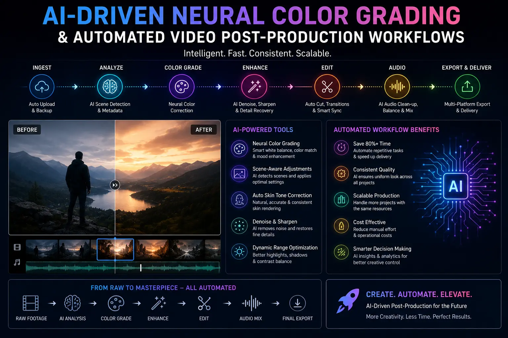
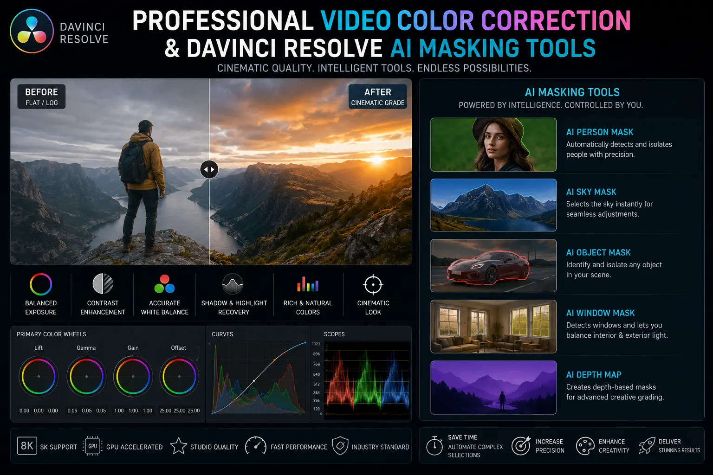

How AI-Driven Neural Grading Corrects Complex Studio Lighting Errors in Seconds
The Shift to Intelligent Post-Production Workflows
In high-volume commercial media production, studio lighting errors are a constant challenge. Even in controlled studio environments, small changes in position, mixed color temperatures (such as window daylight mixing with warm studio fixtures), or temporary bulb shifts can create noticeable color and exposure inconsistencies. Historically, correcting these errors required colorists to manually draw masks, track subjects frame-by-frame, and balance exposures node-by-node — a process that added significant time and cost to post-production timelines.
The emergence of **AI-Driven Neural Color Grading** has transformed this landscape. Modern neural engines analyze the geometric shapes and depth layers of a video frame, identifying elements like faces, foregrounds, and backgrounds instantly. This technology allows editors to correct lighting errors locally and dynamically, accelerating production speeds.
By utilizing these advanced tools, a professional **media production studio** can implement **Automated Video Post-Production Workflows**. Rather than relying on simple global adjustments, neural engines apply targeted corrections that preserve skin tones, fix shadows, and match multi-camera setups in seconds, providing a reliable alternative to traditional, time-consuming methods.
How Neural Engines Fix Lighting Issues
Applying **Advanced Commercial Color Grading** through neural tools involves targeted workflows that address specific technical errors:
- Smart Multi-Camera Matching. Working with different camera brands often creates color space inconsistencies. The neural engine handles **Matching multi-camera color spaces with AI**, mapping raw log data from multiple sensors to a unified baseline color space automatically.
- Context-Aware Relighting. If a subject's face is under-exposed due to incorrect key light placement, the AI analyzes the depth map of the frame to simulate directional fill light, correcting the exposure naturally.
- Automated Masking and Tracking. Utilizing **DaVinci Resolve AI masking tools**, the editor isolates subjects in seconds, adjusting exposure and balance locally without affecting the surrounding background.
- Instant Skin Tone Protection. Neural engines perform **automated skin tone isolation**, ensuring skin colors remain natural and healthy, even when applying stylised creative color grades.
Rapid Delivery Speed
Automating masking and tracking tasks reduces post-production timelines, allowing studios to deliver polished visual assets in record time.
Precise Local Fixes
Using neural depth maps allows editors to apply targeted corrections to specific areas of a frame, avoiding the need for global adjustments.
Seamless Multi-Cam Blending
AI-driven alignment maps different camera sensors to a unified color space, ensuring visual consistency across all angles.
Timeless Creative Looks
Applying neural corrections alongside **cinematic color grading presets** helps maintain a consistent, high-end look across the entire project.

DaVinci Resolve AI Neural Engine in Action
Professional colorists utilize advanced neural toolsets to streamline their color correction pipelines:
- Magic Mask. The neural engine identifies and tracks human features, allowing the colorist to apply adjustments directly to skin, hair, or clothing without manual rotoscoping.
- Depth Map Generation. The AI generates a 3D depth map of the 2D frame, allowing the editor to add atmospheric haze, adjust background exposure, or simulate directional lighting.
- Color Match Engine. By analyzing known reference charts or matching scenes, the AI aligns colors across different clips automatically, providing a balanced baseline for the creative grade.
AI-Driven Software
- DaVinci Resolve Studio with Neural Engine.
- Premiere Pro Auto-Color match tools.
- Topaz Video AI for resolution scaling.
- ACES-managed color workflows.
Key Correction Steps
- Import and linearize multi-camera footage.
- Generate neural masks for key subjects.
- Apply custom depth-map relighting layers.
- Match color spaces across different sensors.
Creative Finishing
- Apply secondary grading presets.
- Adjust skin tone luminance values.
- Export files with correct color profiles.
- Manage digital master assets.

Conclusion
Studio lighting errors no longer require hours of manual, frame-by-frame corrections. Through **AI-Driven Neural Color Grading** and **Automated Video Post-Production Workflows**, professional editors can correct mixed lighting, match multi-camera setups, and apply local exposure adjustments in seconds. This advanced approach preserves the creative details of every shot, ensuring consistent visual quality.
At **The PhD Ads**, our **media production studio** leverages advanced neural color engines and **DaVinci Resolve AI masking tools** to deliver pristine commercial assets. Our editors combine technical **professional video color correction** with **cinematic color grading presets** to guarantee consistent, high-end visuals for your campaigns.
Key Topics
Upgrade Your Post-Production Pipeline
At The PhD Ads, we use neural color grading and AI-driven workflows to match multi-camera setups and correct studio lighting details, ensuring polished delivery for every campaign.
Email: team@e2o.in